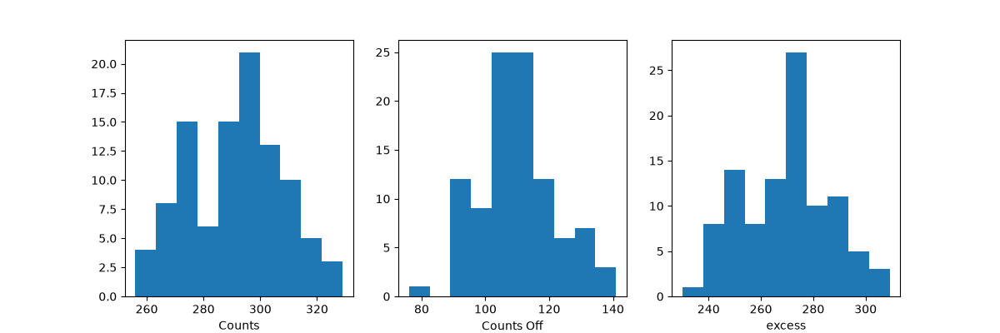
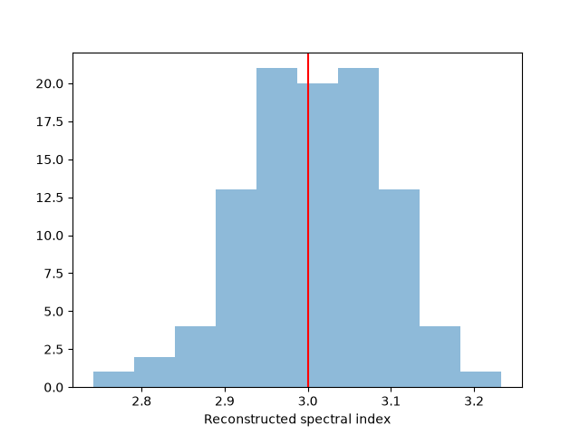

Note
Go to the end to download the full example code or to run this example in your browser via Binder.
1D spectrum simulation#
Simulate a number of spectral on-off observations of a source with a power-law spectral model using the CTA 1DC response and fit them with the assumed spectral model.
Prerequisites#
Knowledge of spectral extraction and datasets used in gammapy, see for instance the spectral analysis tutorial
Context#
To simulate a specific observation, it is not always necessary to simulate the full photon list. For many uses cases, simulating directly a reduced binned dataset is enough: the IRFs reduced in the correct geometry are combined with a source model to predict an actual number of counts per bin. The latter is then used to simulate a reduced dataset using Poisson probability distribution.
This can be done to check the feasibility of a measurement, to test whether fitted parameters really provide a good fit to the data etc.
Here we will see how to perform a 1D spectral simulation of a CTAO observation, in particular, we will generate OFF observations following the template background stored in the CTAO IRFs.
Objective: simulate a number of spectral ON-OFF observations of a source with a power-law spectral model with CTAO using the CTA 1DC response, fit them with the assumed spectral model and check that the distribution of fitted parameters is consistent with the input values.
Proposed approach#
We will use the following classes and functions:
import numpy as np
import astropy.units as u
from astropy.coordinates import Angle, SkyCoord
from regions import CircleSkyRegion
# %matplotlib inline
import matplotlib.pyplot as plt
Setup#
from IPython.display import display
from gammapy.data import FixedPointingInfo, Observation, observatory_locations
from gammapy.datasets import Datasets, SpectrumDataset, SpectrumDatasetOnOff
from gammapy.irf import load_irf_dict_from_file
from gammapy.makers import SpectrumDatasetMaker
from gammapy.maps import MapAxis, RegionGeom
from gammapy.modeling import Fit
from gammapy.modeling.models import PowerLawSpectralModel, SkyModel
Simulation of a single spectrum#
To do a simulation, we need to define the observational parameters like
the livetime, the offset, the assumed integration radius, the energy
range to perform the simulation for and the choice of spectral model. We
then use an in-memory observation which is convolved with the IRFs to
get the predicted number of counts. This is Poisson fluctuated using
the fake() to get the simulated counts for each observation.
# Define simulation parameters parameters
livetime = 1 * u.h
pointing_position = SkyCoord(0, 0, unit="deg", frame="galactic")
# We want to simulate an observation pointing at a fixed position in the sky.
# For this, we use the `FixedPointingInfo` class
pointing = FixedPointingInfo(
fixed_icrs=pointing_position.icrs,
)
offset = 0.5 * u.deg
# Reconstructed and true energy axis
energy_axis = MapAxis.from_edges(
np.logspace(-0.5, 1.0, 10), unit="TeV", name="energy", interp="log"
)
energy_axis_true = MapAxis.from_edges(
np.logspace(-1.2, 2.0, 31), unit="TeV", name="energy_true", interp="log"
)
on_region_radius = Angle("0.11 deg")
center = pointing_position.directional_offset_by(
position_angle=0 * u.deg, separation=offset
)
on_region = CircleSkyRegion(center=center, radius=on_region_radius)
# Define spectral model - a simple Power Law in this case
model_simu = PowerLawSpectralModel(
index=3.0,
amplitude=2.5e-12 * u.Unit("cm-2 s-1 TeV-1"),
reference=1 * u.TeV,
)
print(model_simu)
# we set the sky model used in the dataset
model = SkyModel(spectral_model=model_simu, name="source")
PowerLawSpectralModel
type name value unit error min max frozen link prior
---- --------- ---------- -------------- --------- --- --- ------ ---- -----
index 3.0000e+00 0.000e+00 nan nan False
amplitude 2.5000e-12 TeV-1 s-1 cm-2 0.000e+00 nan nan False
reference 1.0000e+00 TeV 0.000e+00 nan nan True
Load the IRFs In this simulation, we use the CTA-1DC IRFs shipped with Gammapy.
irfs = load_irf_dict_from_file(
"$GAMMAPY_DATA/cta-1dc/caldb/data/cta/1dc/bcf/South_z20_50h/irf_file.fits"
)
location = observatory_locations["ctao_south"]
obs = Observation.create(
pointing=pointing,
livetime=livetime,
irfs=irfs,
location=location,
)
print(obs)
/home/runner/work/gammapy-docs/gammapy-docs/gammapy/.tox/build_docs/lib/python3.11/site-packages/astropy/units/core.py:2102: UnitsWarning: '1/s/MeV/sr' did not parse as fits unit: Numeric factor not supported by FITS If this is meant to be a custom unit, define it with 'u.def_unit'. To have it recognized inside a file reader or other code, enable it with 'u.add_enabled_units'. For details, see https://docs.astropy.org/en/latest/units/combining_and_defining.html
warnings.warn(msg, UnitsWarning)
Observation
obs id : 0
tstart : 51544.00
tstop : 51544.04
duration : 3600.00 s
pointing (icrs) : 266.4 deg, -28.9 deg
deadtime fraction : 0.0%
Simulate a spectrum
Note that here we are using full containment IRFs and thus set
containment_correction=True in the SpectrumDatasetMaker and use
a circular on region. If you have pointlike IRFs, please set
containment_correction=False and use a PointSkyRegion.
See MAGIC with Gammapy tutorial for details.
# Make the SpectrumDataset
geom = RegionGeom.create(region=on_region, axes=[energy_axis])
dataset_empty = SpectrumDataset.create(
geom=geom, energy_axis_true=energy_axis_true, name="obs-0"
)
maker = SpectrumDatasetMaker(
containment_correction=True, selection=["exposure", "edisp", "background"]
)
dataset = maker.run(dataset_empty, obs)
# Set the model on the dataset, and fake
dataset.models = model
dataset.fake(random_state=42)
print(dataset)
SpectrumDataset
---------------
Name : obs-0
Total counts : 287
Total background counts : 22.29
Total excess counts : 264.71
Predicted counts : 293.54
Predicted background counts : 22.29
Predicted excess counts : 271.25
Exposure min : 1.02e+08 m2 s
Exposure max : 1.77e+10 m2 s
Number of total bins : 9
Number of fit bins : 9
Fit statistic type : cash
Fit statistic value (-2 log(L)) : -1712.56
Number of models : 1
Number of parameters : 3
Number of free parameters : 2
Component 0: SkyModel
Name : source
Datasets names : None
Spectral model type : PowerLawSpectralModel
Spatial model type :
Temporal model type :
Parameters:
index : 3.000 +/- 0.00
amplitude : 2.50e-12 +/- 0.0e+00 1 / (TeV s cm2)
reference (frozen): 1.000 TeV
You can see that background counts are now simulated
On-Off analysis#
To do an on off spectral analysis, which is the usual science case, the
standard would be to use SpectrumDatasetOnOff, which uses the
acceptance to fake off-counts. Please also refer to Dataset simulations for
dealing with simulations based on observations of real off counts.
dataset_on_off = SpectrumDatasetOnOff.from_spectrum_dataset(
dataset=dataset, acceptance=1, acceptance_off=5
)
dataset_on_off.fake(npred_background=dataset.npred_background())
print(dataset_on_off)
SpectrumDatasetOnOff
--------------------
Name : CAv3kk9U
Total counts : 283
Total background counts : 24.00
Total excess counts : 259.00
Predicted counts : 295.07
Predicted background counts : 23.82
Predicted excess counts : 271.25
Exposure min : 1.02e+08 m2 s
Exposure max : 1.77e+10 m2 s
Number of total bins : 9
Number of fit bins : 9
Fit statistic type : wstat
Fit statistic value (-2 log(L)) : 4.88
Number of models : 1
Number of parameters : 3
Number of free parameters : 2
Component 0: SkyModel
Name : source
Datasets names : None
Spectral model type : PowerLawSpectralModel
Spatial model type :
Temporal model type :
Parameters:
index : 3.000 +/- 0.00
amplitude : 2.50e-12 +/- 0.0e+00 1 / (TeV s cm2)
reference (frozen): 1.000 TeV
Total counts_off : 120
Acceptance : 9
Acceptance off : 45
You can see that off counts are now simulated as well. We now simulate several spectra using the same set of observation conditions.
n_obs = 100
datasets = Datasets()
for idx in range(n_obs):
dataset_on_off.fake(random_state=idx, npred_background=dataset.npred_background())
dataset_fake = dataset_on_off.copy(name=f"obs-{idx}")
dataset_fake.meta_table["OBS_ID"] = [idx]
datasets.append(dataset_fake)
table = datasets.info_table()
display(table)
name counts excess ... acceptance acceptance_off alpha
...
------ ------ ------ ... ---------- ----------------- -------------------
obs-0 307 288.6 ... 9.0 45.0 0.2
obs-1 264 242.0 ... 9.0 45.0 0.2
obs-2 284 263.4 ... 9.0 45.0 0.2
obs-3 268 245.6 ... 9.0 45.00000000000001 0.19999999999999998
obs-4 326 305.4 ... 9.0 45.0 0.2
obs-5 273 248.6 ... 9.0 45.0 0.2
obs-6 318 295.6 ... 9.0 44.99999999999999 0.20000000000000004
obs-7 274 248.2 ... 9.0 45.0 0.2
obs-8 298 274.6 ... 9.0 45.0 0.2
... ... ... ... ... ... ...
obs-90 277 258.0 ... 9.0 44.99999999999999 0.20000000000000004
obs-91 275 249.8 ... 9.0 45.0 0.2
obs-92 302 278.4 ... 9.0 45.0 0.2
obs-93 293 274.2 ... 9.0 45.0 0.2
obs-94 311 289.2 ... 9.0 45.0 0.2
obs-95 295 270.6 ... 9.0 44.99999999999999 0.20000000000000004
obs-96 285 263.4 ... 9.0 45.0 0.2
obs-97 279 260.2 ... 9.0 45.0 0.2
obs-98 292 271.6 ... 9.0 45.0 0.2
obs-99 313 292.2 ... 9.0 45.0 0.2
Length = 100 rows
Before moving on to the fit let’s have a look at the simulated observations.

Now, we fit each simulated spectrum individually
results = []
fit = Fit()
for dataset in datasets:
dataset.models = model.copy()
result = fit.optimize(dataset)
results.append(
{
"index": result.parameters["index"].value,
"amplitude": result.parameters["amplitude"].value,
}
)
We take a look at the distribution of the fitted indices. This matches very well with the spectrum that we initially injected.
fig, ax = plt.subplots()
index = np.array([_["index"] for _ in results])
ax.hist(index, bins=10, alpha=0.5)
ax.axvline(x=model_simu.parameters["index"].value, color="red")
ax.set_xlabel("Reconstructed spectral index")
print(f"index: {index.mean()} += {index.std()}")
plt.show()

index: 3.0074766824461654 += 0.08326380339907025
Exercises#
Change the observation time to something longer or shorter. Does the observation and spectrum results change as you expected?
Change the spectral model, e.g. add a cutoff at 5 TeV, or put a steep-spectrum source with spectral index of 4.0
Simulate spectra with the spectral model we just defined. How much observation duration do you need to get back the injected parameters?